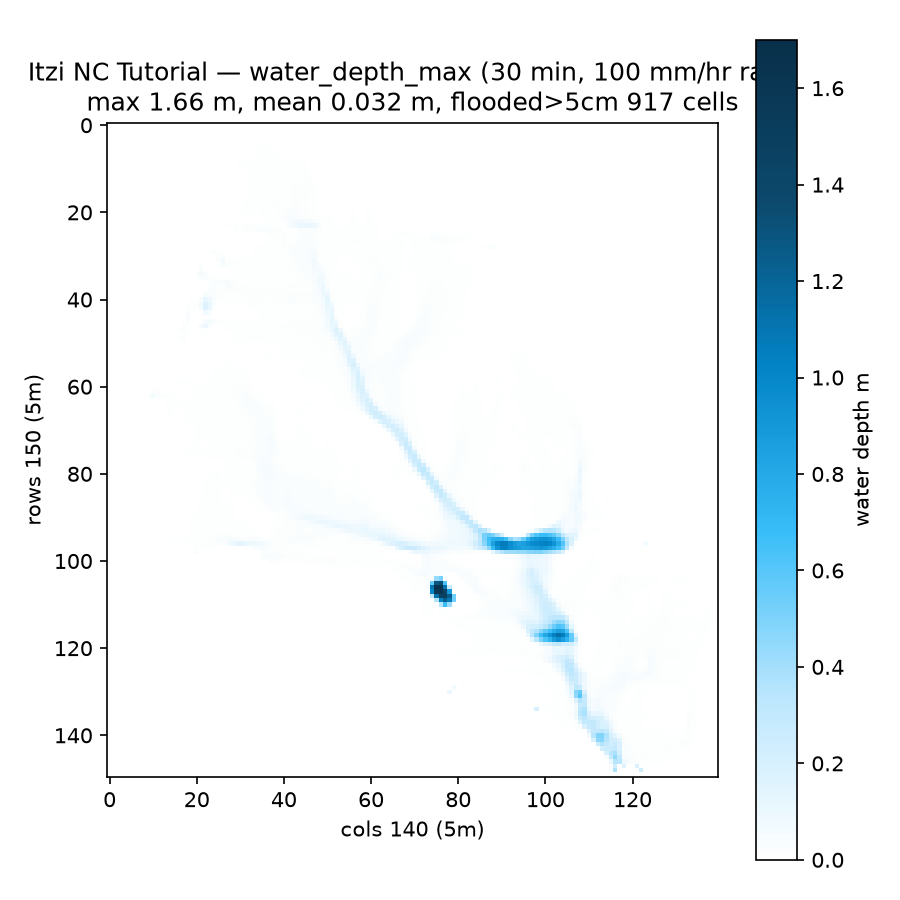
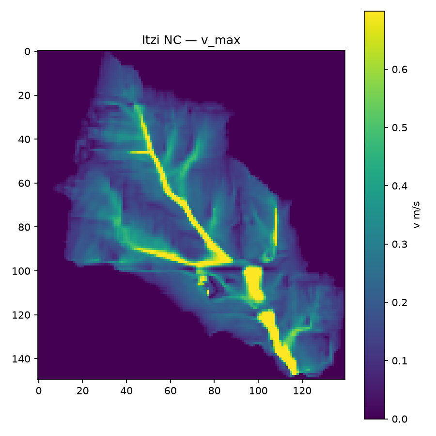
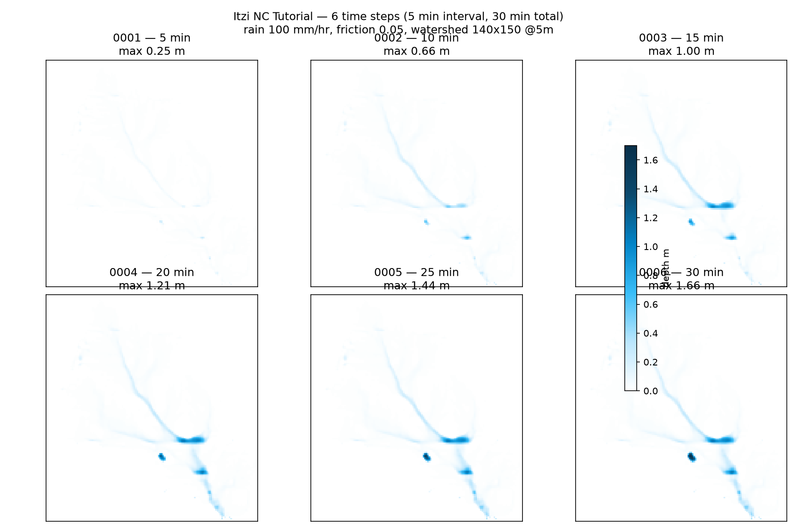

Run inside osgeo/grass-gis 8.5.0 Docker via grass --tmp-project EPSG:3358 --exec. Steps from docs/tutorial.rst + tests/grass/test_tutorial.py. Duration 00:30:00, record 00:05:00 (6 steps), rain 100 mm/hr, n=0.05, CFL 0.5. Watershed 140×150 @5m (700×750 m) — outlet 638888,220011. Elapsed 0:00:04.

max 1.66 m mean 0.032 m flooded>5cm 917/21000 (9.1%). See nc_depth_max.tif (84K Float32, EPSG:3358)

from nc_v_max.tif — v 0–X m/s

Space-Time Raster Datasets (STRDS) nc_itzi_tutorial_water_depth_0001..0006 + nc_itzi_tutorial_water_depth_max inside GRASS DB. View with g.gui.animation → select STRDS → Play (see docs/img/nc_itzi_tutorial.png) or d.rast nc_itzi_tutorial_water_depth_0004 + r.colors.r.out.gdal input=nc_itzi_tutorial_water_depth_max output=/tmp/nc_depth_max.tif (what we did) → open in QGIS / GDAL. Also t.rast.list to see times 300..1800 s.nc_itzi_tutorial.csv (volume_error 0.12%→0% after CFL fix).matplotlib from exported GeoTIFFs for quick view (no GRASS GUI needed). Full animation would be g.gui.animation strds=nc_itzi_tutorial_water_depth exported to mp4 via GUI.simulation_time,average_timestep,timesteps,boundary_volume,rainfall_volume,infiltration_volume,inflow_volume,losses_volume,drainage_network_volume,domain_volume,volume_change,volume_error,percent_error 0:00:00,-,0,0.000000,0.000000,-0.000000,0.000000,-0.000000,0.000000,0.000000,0.000000,0.000000,0.00% 0:05:00,2.884615,104,-9.244499,2092.957031,-0.000000,0.000000,-0.000000,0.000000,2086.239258,2086.239258,2.555507,0.12% 0:10:00,1.167315,257,-123.982880,2092.957031,-0.000000,0.000000,-0.000000,0.000000,4055.170898,1968.931641,0.000000,0.00% 0:15:00,0.882353,340,-306.208527,2092.957031,-0.000000,0.000000,-0.000000,0.000000,5841.877930,1786.707031,0.000000,0.00% 0:20:00,0.759494,395,-456.852570,2092.957031,-0.000000,0.000000,-0.000000,0.000000,7477.951172,1636.073242,0.000000,0.00% 0:25:00,0.688073,436,-1823.857544,2092.957031,-0.000000,0.000000,-0.000000,0.000000,7747.005371,269.054199,0.000000,0.00% 0:30:00,0.638298,470,-1914.228271,2092.957031,-0.000000,0.000000,-0.000000,0.000000,7925.687988,178.682617,0.000000,0.00%
/work/test/itzi/nc_depth_max.tif (84K, 140x150 @5m, EPSG:3358, max 1.657) /work/test/itzi/nc_v_max.tif /work/test/itzi/nc_itzi_tutorial_water_depth_0001..0006.tif (6 × 84K) /work/test/itzi/nc_itzi_tutorial.csv /work/test/itzi/visualization/nc_depth_max.png /work/test/itzi/visualization/nc_timesteps.png